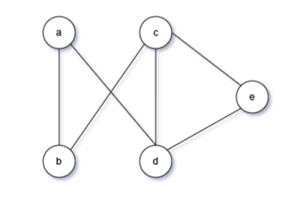
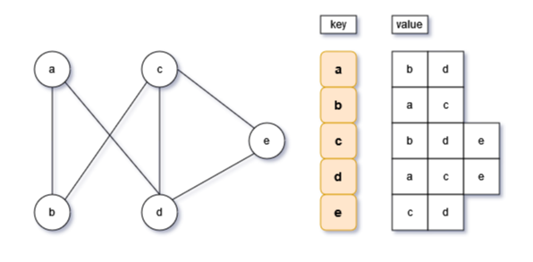
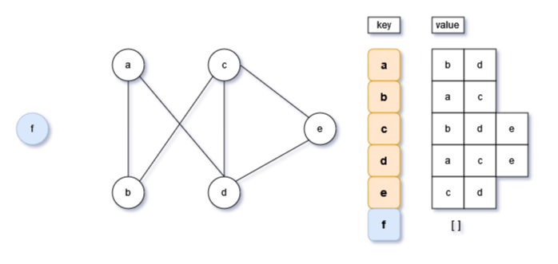
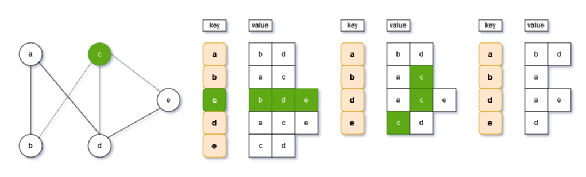
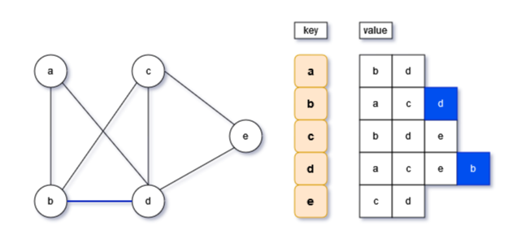

Python无向图邻接表实现

一、无向图邻接表表示

Python使用邻接表实现无向图，使用Python的字典dict来实现，字典的健存储顶点，字典的值存储图的边。
使用字典的过程中，需要注意字典的几个基本操作，如：字典长度，添加健以及值。
构造函数
基于Python的字典实现无向图，仅需一个成员变量：
self.graph_list = dict[str, list[str]]()
- 字典的健key:顶点(str类型)
- 字典的值value:是一个列表，存储顶点所链接的边（list[str]类型）
- 为列便于理解，建议为变量添加注解，如：
dict[str, list[str]]()
def __init__(self, verts: str, edges: list[list[str]]):
# 初始化一个字典，健为顶点，值为边（list）
self.graph_list = dict[str, list[str]]()
# 添加顶点，向字典中添加健
for v in verts:
self.add_vert(v)
# 添加边，向字典中添加健的值
for e in edges:
self.add_edge(e[0], e[1])
二、无向图增加顶点

为无向图增加一个顶点，即在字典中新增一个键值对，由于只增加列顶点，因此健的值为空
[]注意字典的操作方法：
self.graph_list[v] = []，在字典新增一个健为v，但是值为[]
# 添加顶点：向字典添加健
def add_vert(self, v):
if v in self.graph_list:
return
# 仅添加顶点的健，暂无键值
self.graph_list[v] = []
三、无向图删除顶点

无向图删除一个顶点，需要进行两步操作方可完成：
- 在字典中删除顶点对应的键值对；
- 处理其他顶点有链接的边，因此需要对其他顶点进行遍历，通过while循环获取每一个顶点的键值，然后在键值中删除对应的顶点。
# 删除顶点，删除顶点的键值对，同时删除其他顶点内包含该顶点值中包含的顶点
def remove_vert(self, v):
if v not in self.graph_list:
raise ValueError("查无此顶点")
# 首先删除字典中v健的键值对
self.graph_list.pop(v)
# 遍历顶点和链表字典，逐个从字典中顶点对应的键值中，删除v顶点的边
for vert in self.graph_list:
if v in vert:
self.graph_list[vert].remove(v)
四、无向图边操作

无向图邻接表的边操作，与邻接矩阵类似，也是需要进行两次操作。对边的两个顶点都进行操作。
同样也要注意，不可为同一个顶点增加边，需要做一个前置的if判断。
# 增加边：同时修改两个顶点对应的键值
def add_edge(self, vert1, vert2):
if vert1 not in self.graph_list or vert2 not in self.graph_list or vert1 == vert2:
raise ValueError('顶点不存在')
self.graph_list[vert1].append(vert2)
# 对键值做个排序，看起来舒服些
self.graph_list[vert1].sort()
self.graph_list[vert2].append(vert1)
self.graph_list[vert2].sort()
# 删除边：同时删除两个顶点对应的键值
def remove_edge(self, vert1, vert2):
if vert1 not in self.graph_list or vert2 not in self.graph_list or vert1 == vert2:
raise ValueError('顶点不存在')
self.graph_list[vert1].remove(vert2)
self.graph_list[vert2].remove(vert1)
五、全部代码
class GraphList:
# 基于字典实现无向图的邻接链表
# 字典的健：顶点(str类型)
# 字典的值：是一个列表，存储顶点所链接的边list[str]类型
# edges: list[list[str]]：edges是一个列表，包含多条边，每条边list[str]也是一个列表，包含两个顶点
def __init__(self, verts: str, edges: list[list[str]]):
# 初始化一个字典，健为顶点，值为边（list）
self.graph_list = dict[str, list[str]]()
# 添加顶点，向字典中添加健
for v in verts:
self.add_vert(v)
# 添加边，向字典中添加健的值
for e in edges:
self.add_edge(e[0], e[1])
# 图的大小，就是顶点个数，即字典的长度
def size(self):
return len(self.graph_list)
# 添加顶点：向字典添加健
def add_vert(self, v):
if v in self.graph_list:
return
# 仅添加顶点的健，暂无键值
self.graph_list[v] = []
# 删除顶点，删除顶点的键值对，同时删除其他顶点内包含该顶点值中包含的顶点
def remove_vert(self, v):
if v not in self.graph_list:
raise ValueError("查无此顶点")
# 首先删除字典中v健的键值对
self.graph_list.pop(v)
# 遍历顶点和链表字典，逐个从字典中顶点对应的键值中，删除v顶点的边
for vert in self.graph_list:
if v in vert:
self.graph_list[vert].remove(v)
# 增加边：同时修改两个顶点对应的键值
def add_edge(self, vert1, vert2):
if vert1 not in self.graph_list or vert2 not in self.graph_list or vert1 == vert2:
raise ValueError('顶点不存在')
self.graph_list[vert1].append(vert2)
# 对键值做个排序，看起来舒服些
self.graph_list[vert1].sort()
self.graph_list[vert2].append(vert1)
self.graph_list[vert2].sort()
# 删除边：同时删除两个顶点对应的键值
def remove_edge(self, vert1, vert2):
if vert1 not in self.graph_list or vert2 not in self.graph_list or vert1 == vert2:
raise ValueError('顶点不存在')
self.graph_list[vert1].remove(vert2)
self.graph_list[vert2].remove(vert1)
if __name__ == "__main__":
verts = ['a', 'b', 'c', 'd', 'e']
# edges = [
# [verts[0], verts[1]],
# [verts[0], verts[3]],
# [verts[1], verts[2]],
# [verts[2], verts[3]],
# [verts[2], verts[4]],
# [verts[3], verts[4]],
# ]
edges = [['a', 'b'], ['a', 'd'], ['b', 'c'], ['c', 'd'], ['c', 'e'], ['d', 'e'], ]
grap_list = GraphList(verts, edges)
print("大小：",grap_list.size())
print(grap_list.graph_list)
grap_list.add_vert('f')
grap_list.add_edge('b','f')
print("大小：", grap_list.size())
print(grap_list.graph_list)
grap_list.remove_edge('d','e')
print("大小：", grap_list.size())
print(grap_list.graph_list)
grap_list.remove_vert('c')
print("大小：", grap_list.size())
print(grap_list.graph_list)